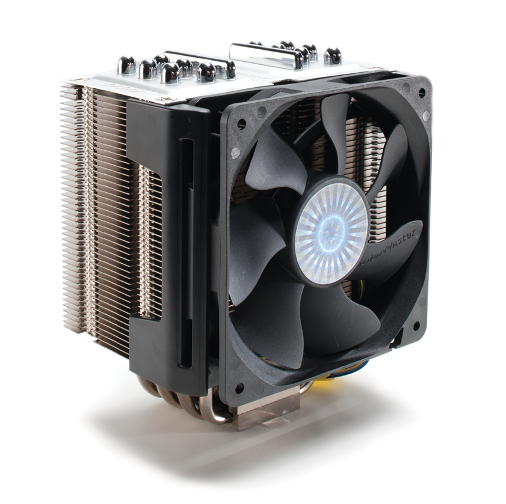

How Computers Are Made (And Why It’s Just 0s and 1s)

Almost everyone uses a computer every day, yet very few people know what is happening inside the machine sitting on their desk or inside their laptop. We write documents, play games, browse the internet, watch videos, and even create software without thinking about what makes all of this possible.
It might seem unbelievable that everything a computer does—from displaying beautiful graphics to running complex artificial intelligence—is ultimately powered by billions of tiny electrical switches that only understand two states: on and off.
Those two states become the famous binary digits, 0 and 1. Every photo you've taken, every song you've listened to, every website you've visited, and every game you've played eventually becomes a massive collection of these binary digits.
But how does ordinary sand become a machine capable of billions of calculations every second? Let's follow the journey step by step.
Step 1: From Sand to Silicon

It sounds strange, but computers begin as ordinary sand. Sand contains a chemical element called silicon dioxide. Engineers extract the silicon and purify it until it is almost perfectly clean—more than 99.9999999% pure.
Pure silicon is a semiconductor, meaning it can either conduct electricity or block it depending on how it is treated. This unique property makes it the perfect material for building electronic circuits.
Large cylindrical crystals of silicon are grown in specialized factories. These crystals are sliced into extremely thin wafers that become the foundation for computer chips.
A single silicon wafer may eventually contain dozens or even hundreds of CPUs, GPUs, or memory chips before being cut apart into individual processors.
Step 2: Transistors
A transistor is one of the most important inventions in human history. It acts like an incredibly tiny electronic switch that can either allow electricity to pass or stop it completely.
Modern processors contain astonishing numbers of these switches. High-end desktop processors often contain more than 20 billion transistors, while powerful graphics cards can contain over 80 billion.
Individually, a transistor isn't very impressive. It simply turns on or off. However, when billions of them work together, they can perform arithmetic, store information, compare values, and execute software.
These transistors are so small that thousands of them could fit across the width of a single human hair.
Step 3: CPU

The Central Processing Unit (CPU) is often called the brain of the computer. It reads instructions from programs and carries them out one after another at incredible speed.
Every click of your mouse, every key you press, and every application you open generates millions of instructions for the CPU to execute.
Modern CPUs contain multiple cores, allowing them to process several tasks at the same time. They also include small, extremely fast memory areas called caches that reduce the time needed to access frequently used information.
Today's processors can execute billions of instructions every second while carefully coordinating work with memory, storage, graphics hardware, and other components.
Step 4: Memory

A computer needs somewhere to store information while it is working. This is where memory comes in.
RAM (Random Access Memory) is temporary memory. When you open a browser, launch a game, or edit a document, the data is loaded into RAM because it is much faster than permanent storage.
However, RAM loses everything when power is removed. That's why your files are stored on an SSD or hard drive instead.
SSDs use flash memory to permanently store information, allowing your operating system, applications, photos, and videos to remain available even after the computer is turned off.
Step 5: Motherboard
Think of the motherboard as the city's transportation network. Every major component plugs into it and communicates through tiny copper pathways called traces.
The CPU exchanges information with RAM, storage devices, graphics cards, network adapters, USB ports, and many other components through the motherboard.
Modern motherboards also contain controllers responsible for audio, networking, storage interfaces, BIOS firmware, power management, and expansion slots.
Without the motherboard coordinating communication, the computer's individual components would not be able to work together.
Step 6: Power Supply

Every electronic component inside a computer requires carefully controlled electrical power.
The power supply unit (PSU) converts high-voltage electricity from your wall outlet into several lower voltages used by different computer components.
It also protects the system from power fluctuations and ensures that each component receives stable electricity.
Choosing a high-quality power supply is important because every other part of the computer depends on it for reliable operation.
Step 7: Cooling System

Billions of transistors switching on and off every second generate heat. Without cooling, temperatures would quickly rise high enough to damage the processor.
Most computers use heatsinks and fans to remove heat. The heatsink absorbs heat from the CPU while the fan pushes cool air across its metal fins.
High-performance gaming computers and professional workstations sometimes use liquid cooling systems, which move heat away using circulating coolant before releasing it through a radiator.
Effective cooling allows processors to maintain higher speeds and improves both performance and hardware lifespan.
How 0s and 1s Become Everything
Since transistors can only be on or off, computers naturally represent information using binary digits: 1 for on and 0 for off.
Groups of eight binary digits form a byte. Bytes can represent letters, numbers, colors, sounds, or instructions.
For example, the capital letter A is stored as:
01000001Images are simply millions of colored pixels stored as binary numbers. Music is represented as digital samples. Videos are sequences of images shown rapidly. Even this webpage eventually becomes binary instructions interpreted by your browser.
Although humans see pictures and text, the computer only sees electrical patterns represented by billions of 0s and 1s.
Final Thoughts
Every computer is the result of decades of engineering and scientific discoveries. What begins as ordinary sand is transformed into one of the most complex machines humanity has ever built.
Billions of microscopic transistors work together to execute instructions, store information, display graphics, connect to the internet, and run the software we rely on every day.
The next time you power on your computer, remember that beneath the keyboard and screen lies an extraordinary system built from silicon, electricity, and binary code. It's amazing to think that everything—from a simple text document to cutting-edge artificial intelligence—is ultimately created from countless combinations of just two digits: 0 and 1.
💬 Comments (0)
Leave a Comment